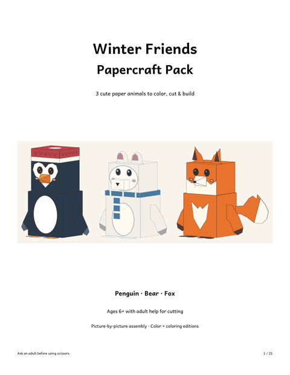
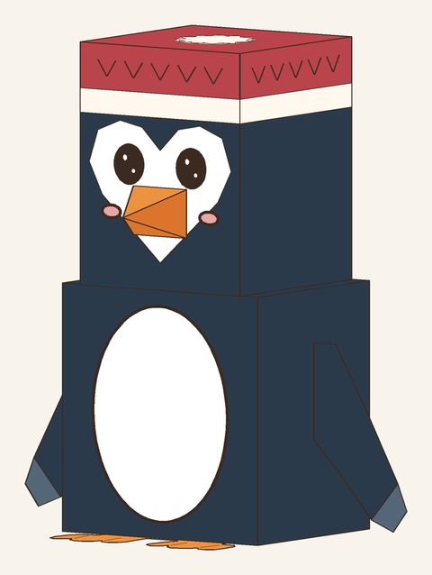
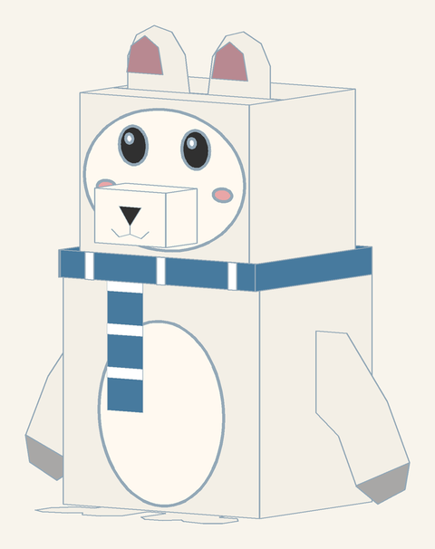
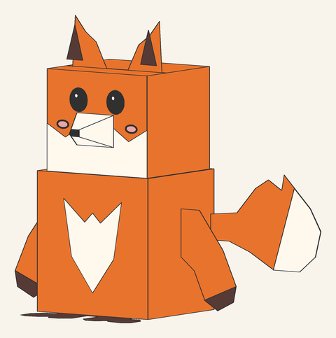
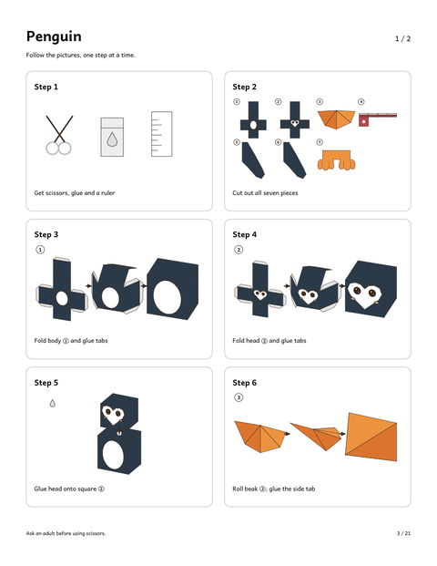
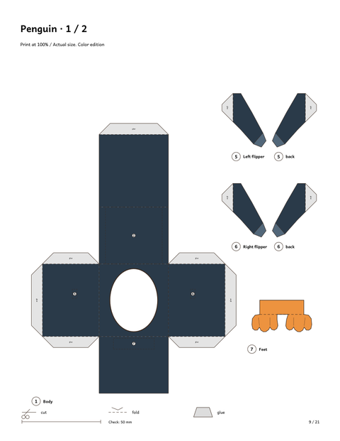
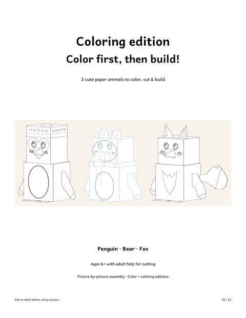

Winter Animal Paper Crafts
3D paper penguin, polar bear & fox · picture-by-picture steps · ages 6+
Winter break, a snow day, a January classroom unit: sooner or later kids need something to make with their hands. These printable winter animals are small standing 3D figures that kids cut, fold and glue themselves.
The instructions work like building-block instructions. Every figure has small picture steps with almost no text, and each piece is numbered in the order you use it. We tested the same method with a 10-year-old on our paper snowman, and it came out right. Kids around 6+ can build with a grown-up helping with the cutting.
Want to try the method first? Download the free 3D paper snowman:
⬇ Download the free 3D paper snowman (US Letter PDF) ⬇ Download the free 3D paper snowman (A4 PDF)Free PDF includes:
- Picture-by-picture instructions (12 steps)
- Color template on 2 pages
What's inside the Winter Friends pack







Three winter friends to build
The pack has a penguin with a heart-shaped face and a red hat, a polar bear with a striped scarf, and a fox with pointy ears and a big tail. Each one is a boxy standing figure made of folded and glued paper pieces.
Color it first, or build it in color
Every figure comes in full color and as a coloring edition with black outlines. With the coloring edition, kids color the pieces with crayons or markers first, then cut and build, so no two animals look alike.
That makes it a good snow day, winter break or classroom winter unit activity: color first, build second.
Screen-free for a rainy day or a snow day
You print the PDF, so there is nothing to wait for. One animal is a good single afternoon; three animals can stretch over a whole week of winter break. Pieces stay numbered, so kids always know what comes next.
The pictures show 3D renders of the finished figures, so you can see exactly what you'll build.
Winter Friends Papercraft Pack

- 3D paper penguin, polar bear and fox
- Picture-by-picture instructions — up to 12 small steps per figure, almost no text
- Color edition + coloring edition (color first, then build)
- US Letter & A4 · 21 pages · instant PDF download
$7.00
Get the Winter Friends Papercraft Pack →Tips for a smooth build
- Print at 100% ("Actual size"), on thicker paper if you have it (160–200 gsm cardstock).
- A glue stick is enough; use a ruler and a blunt knife to crease the fold lines.
- Grown-ups cut the smallest pieces; kids do the folding and gluing.
- For a classroom, print the coloring edition and let students color first.
Frequently asked questions
What is in the Winter Friends pack?
Three 3D paper figures: a penguin, a polar bear and a fox. Each has picture-step instructions and numbered pieces, in a color edition and a coloring edition. 21 pages, US Letter and A4.
Is there a free version?
The free printable is the paper snowman, which uses the same picture-step method. The winter animals are in the paid pack.
What age is it for?
Ages 6+, with a grown-up helping with the cutting. The steps are pictures, so there is very little to read.
Can I use it in a classroom?
Yes, for a winter unit or a party table. Print the coloring edition and students color first, then build.